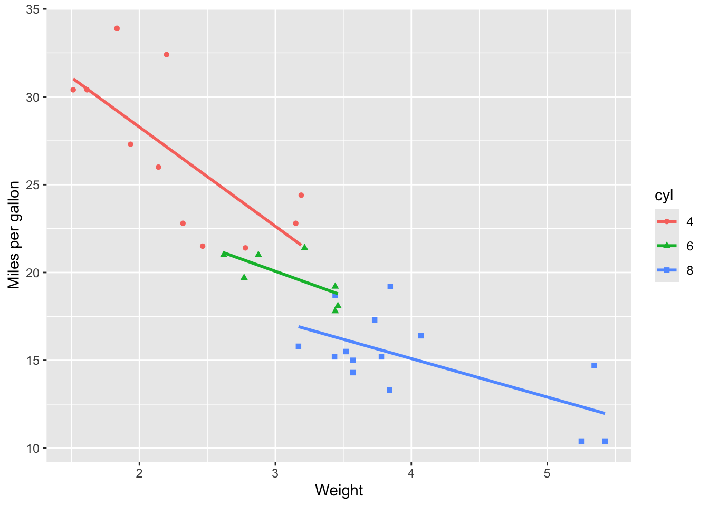

1 + 1[1] 2This short post is intended to confirm that I can run and render R code within a Quarto blog post.
Let’s start off with some very simple base-R
1 + 1[1] 2And of course let’s not forget the obligatory
statement <- "Hello World"
statement[1] "Hello World"Let’s now look at a base-R graphic, again using a cliched example
plot(mtcars$mpg ~ mtcars$wt)
Let’s now continue to be cliched, and load and use the tidyverse
glimpse(mtcars)Rows: 32
Columns: 11
$ mpg <dbl> 21.0, 21.0, 22.8, 21.4, 18.7, 18.1, 14.3, 24.4, 22.8, 19.2, 17.8,…
$ cyl <dbl> 6, 6, 4, 6, 8, 6, 8, 4, 4, 6, 6, 8, 8, 8, 8, 8, 8, 4, 4, 4, 4, 8,…
$ disp <dbl> 160.0, 160.0, 108.0, 258.0, 360.0, 225.0, 360.0, 146.7, 140.8, 16…
$ hp <dbl> 110, 110, 93, 110, 175, 105, 245, 62, 95, 123, 123, 180, 180, 180…
$ drat <dbl> 3.90, 3.90, 3.85, 3.08, 3.15, 2.76, 3.21, 3.69, 3.92, 3.92, 3.92,…
$ wt <dbl> 2.620, 2.875, 2.320, 3.215, 3.440, 3.460, 3.570, 3.190, 3.150, 3.…
$ qsec <dbl> 16.46, 17.02, 18.61, 19.44, 17.02, 20.22, 15.84, 20.00, 22.90, 18…
$ vs <dbl> 0, 0, 1, 1, 0, 1, 0, 1, 1, 1, 1, 0, 0, 0, 0, 0, 0, 1, 1, 1, 1, 0,…
$ am <dbl> 1, 1, 1, 0, 0, 0, 0, 0, 0, 0, 0, 0, 0, 0, 0, 0, 0, 1, 1, 1, 0, 0,…
$ gear <dbl> 4, 4, 4, 3, 3, 3, 3, 4, 4, 4, 4, 3, 3, 3, 3, 3, 3, 4, 4, 4, 3, 3,…
$ carb <dbl> 4, 4, 1, 1, 2, 1, 4, 2, 2, 4, 4, 3, 3, 3, 4, 4, 4, 1, 2, 1, 1, 2,…mtcars |>
group_by(carb) |>
summarise(
mean_mpg = mean(mpg)
) |>
ungroup()# A tibble: 6 × 2
carb mean_mpg
<dbl> <dbl>
1 1 25.3
2 2 22.4
3 3 16.3
4 4 15.8
5 6 19.7
6 8 15 And to visualise
mtcars |>
mutate(cyl = factor(cyl)) |>
ggplot(aes(x = wt, y = mpg, colour = cyl, group= cyl)) +
geom_point(aes(shape = cyl)) +
stat_smooth(se = FALSE, method = "lm") +
labs(
x = "Weight",
y = "Miles per gallon"
)`geom_smooth()` using formula = 'y ~ x'
So far, so good…